Analyze Your Lake


Build Bigger Bass

Build Bigger Bass
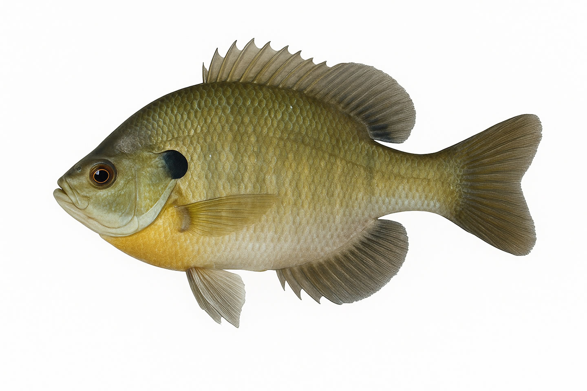

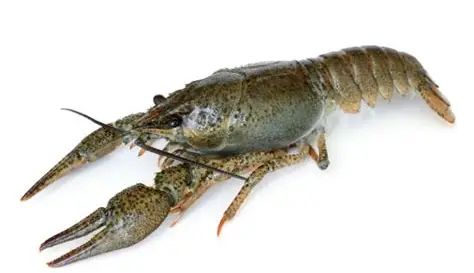
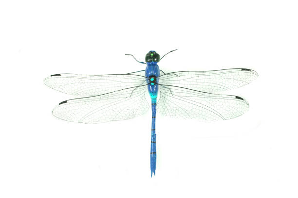
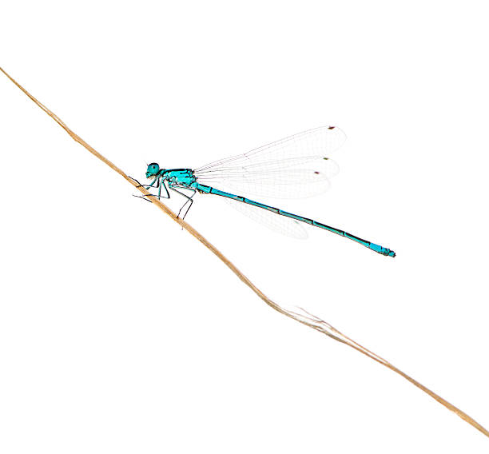
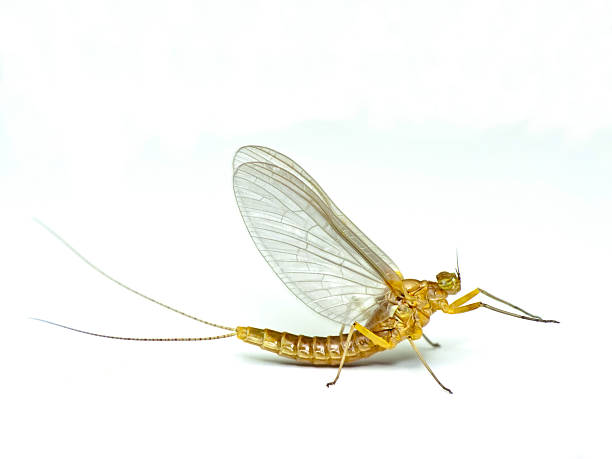
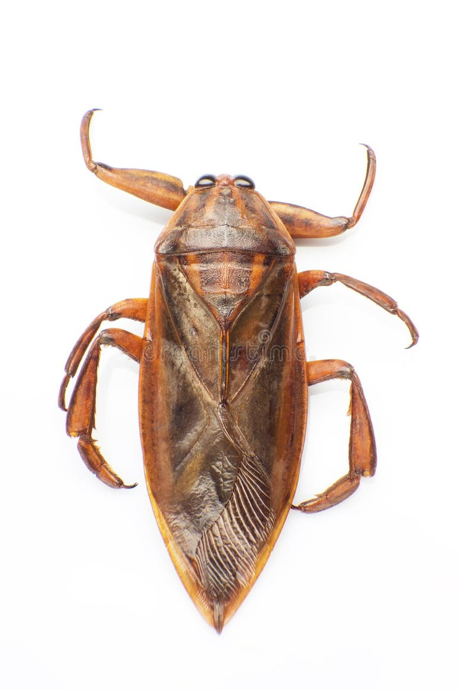
Filamentous algae often looks like submerged grass or habitat, but it is not vegetation. Score algae separately from vegetation to avoid overestimating habitat quality.
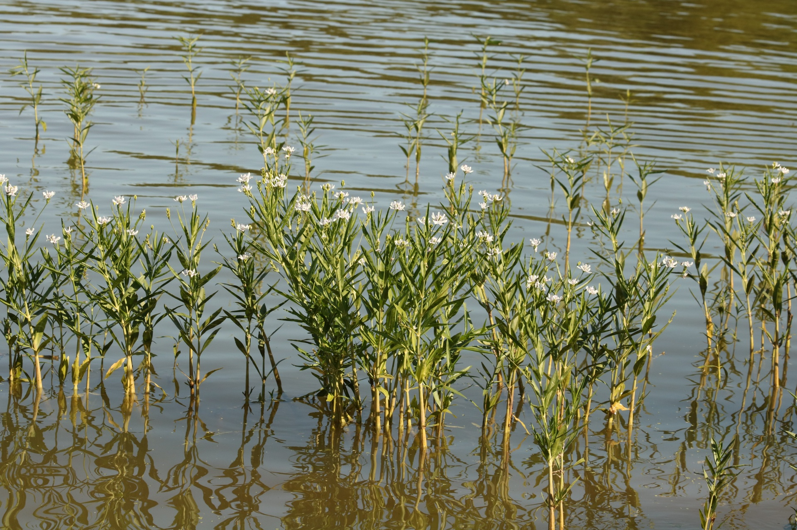
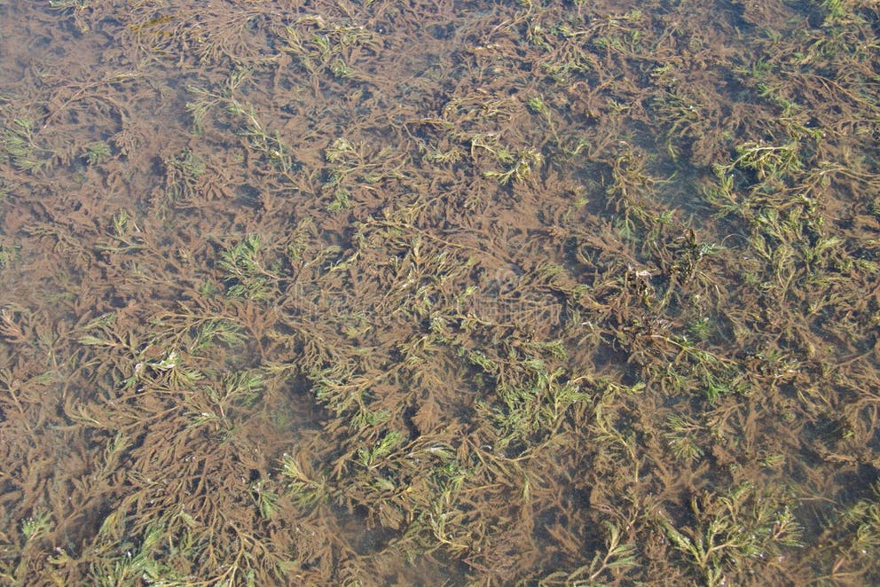
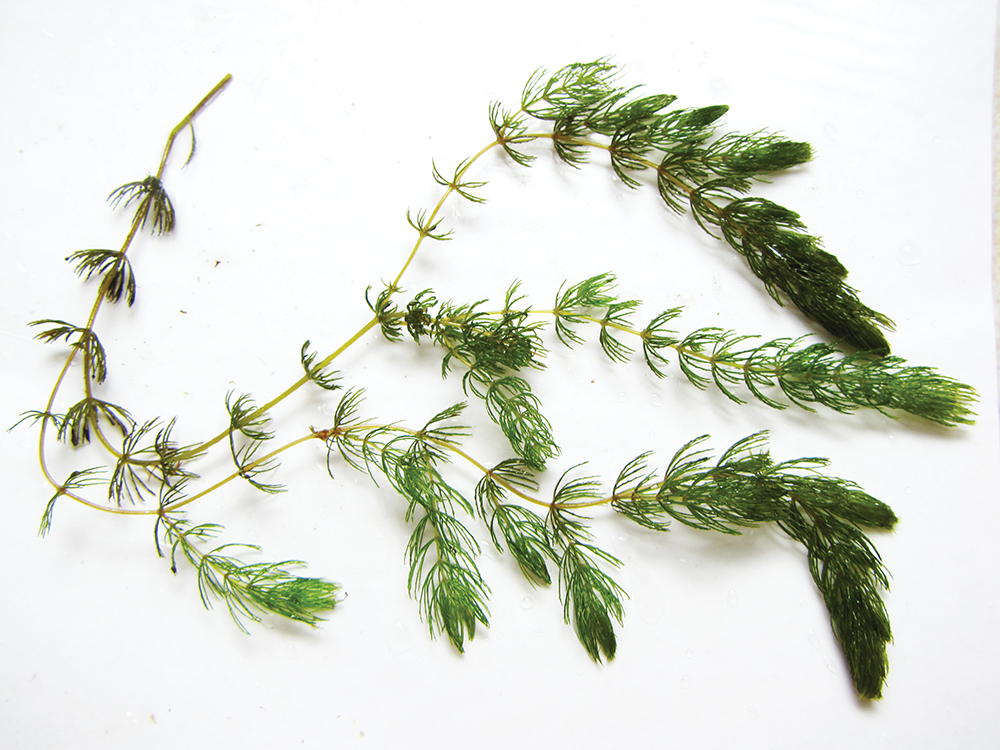
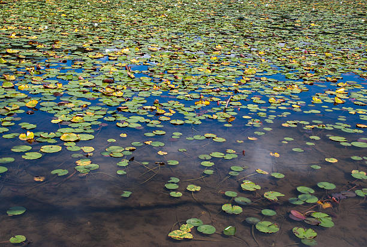
Phytoplankton blooms are algae blooms — but not all algae blooms are phytoplankton blooms. Healthy phytoplankton gives water a green tint and supports the entire food chain. However, filamentous algae and mat-forming algae can be detrimental to lake habitat, smothering spawning beds and reducing water quality.
Use the Jar TestThe jar test helps determine whether your pond has beneficial phytoplankton or harmful algae. Simply collect pond water in a clear jar and let it sit for 30–60 minutes:
This simple test helps determine whether your pond needs fertilization, algae control, or habitat correction.
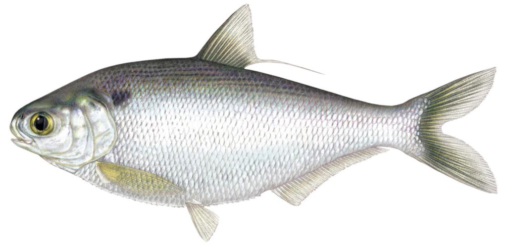
Gizzard shad are almost identical to Threadfin, but are much larger and grow too large for bass to consume. They eat bass and bluegill eggs and outcompete forage. They should not be stocked in ponds under 50 acres.
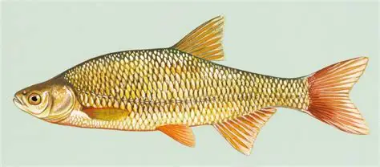
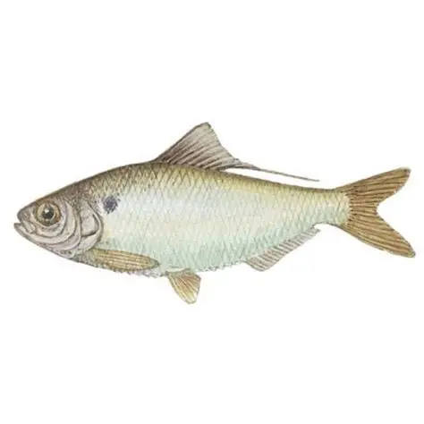
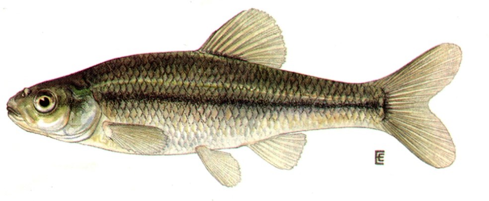
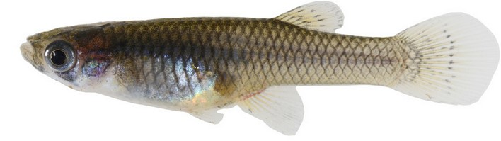
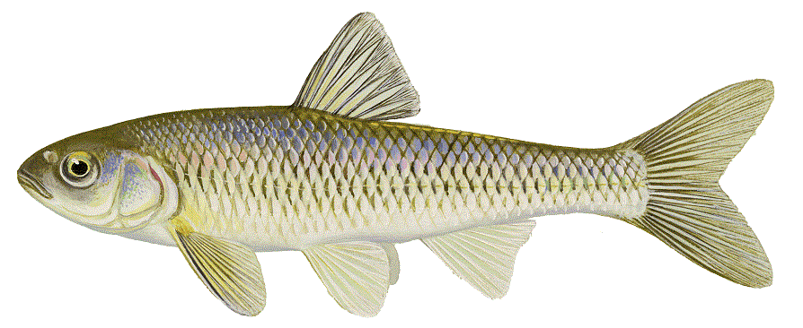
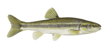
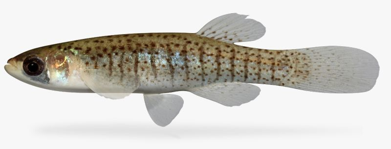
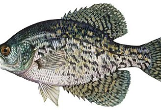
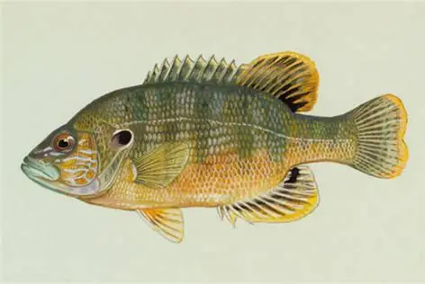
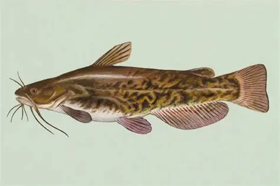